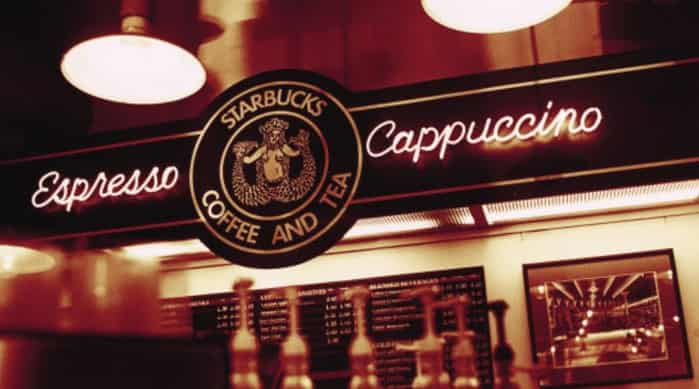

Historia
Con la humedad de una calle empedrada; bajo de un cartel luminoso en el histórico Pike
Place
Market en la ciudad de Seattle, estado de Washington; con la calidez de una pequeña tienda y el perfume
inigualable del unos granos de café recién tostados; y con un nombre inspirado en un clásico de la
literatura como lo es la novela Moby Dick evocando a la tradición marítima de los primeros comerciantes;
Starbucks abrió sus puertas, por primera vez, mientras los días sucedían en marzo de 1971.
Esos primeros granos de café, entre una intensa variedad de tés y especias del mundo se encontraban en
esas
cuatro paredes para ofrecerle a cada cliente una invitación a llevarse parte de ese mundo -su mundo- a
sus
hogares. Y especialmente, compartirlo.
De esa esencia fundante Starbucks cobró vida. Diez años después un joven llegado desde Nueva York, un
tal
Howard Schultz, se atrevió a entrar a esa tienda, tomar una taza de Sumatra y dejarse invadir por su
intensidad y su imprevisible sabor. Ese instante cambió su destino. Un año después se uniría a la
empresa y
en 1983 un recorrido por cafeterías italianas lo inspiró para tomar un desafío mayor: llevar la calidez
y el
arte de la cultura italiana por el café al corazón estadounidense.
Ese desafío cobró su esencia propia. En 1987 el color verde desplazó al marrón de los delantales para
construir referencia para siempre. Pronto Starbucks se expandió por Chicago, Vancouver (Canadá),
California,
Washington y Nueva York. En 1996 cruzó el Pacífico y desembarcó primero en Japón, luego en Europa dos
años
después y en China en 1999. La conexión fue global.
Durante dos décadas hasta hoy, Starbucks le dio -y le da- la bienvenida a sus clientes en sus miles de
tiendas por todo el mundo. Es el principal tostador y minorista de especialidades de café del planeta y
aquel joven neoyorkino aún hoy sigue construyendo la esencia de Starbucks.
Esa misma en la que reside el verdadero valor, en el que se respira la herencia de ese aroma de los
primeros
granos de café tostados en Seattle. Se percibe la calidez de cada hogar en rincones del mundo conectados
viviendo en comunidad. Y se hace realidad -con una taza de café- nuestra misión: inspirar y nutrir el
espíritu humano.
Como desde 1971.
Como cada día.